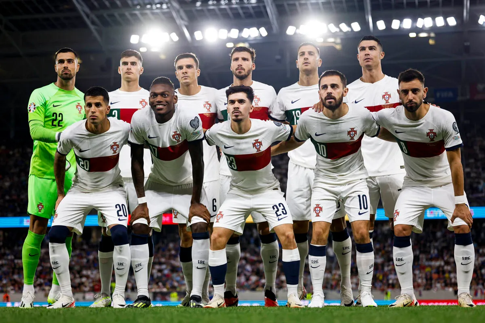

Seleção Portuguesa na UEFA Eurocopa
Portugal é um dos destaques entre as seleções participantes da Euro 2024. Com uma história rica no torneio, tendo vencido em 2016 e alcançado o vice-campeonato em 2004. A equipe é liderada por Roberto Martínez, e conta com jogadores como Cristiano Ronaldo, Bernardo Silva, Bruno Fernandes entre outros.
